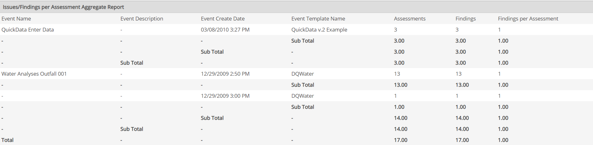

The Issues/Findings per Assessment Aggregate Report is used to provide a statistical view of findings for assessments. This report is meant to be used with an Event Log that has been specially configured and used to log assessments and findings.
The report groups together all events for an Event Log that have the same LogicalEventID as a single assessment. In order to have the same LogicalEventID, the findings must be entered as a batch using Quick Add for events. Each instance counts as one finding for the assessment. The report then provides statistics concerning the number of findings per assessment.
